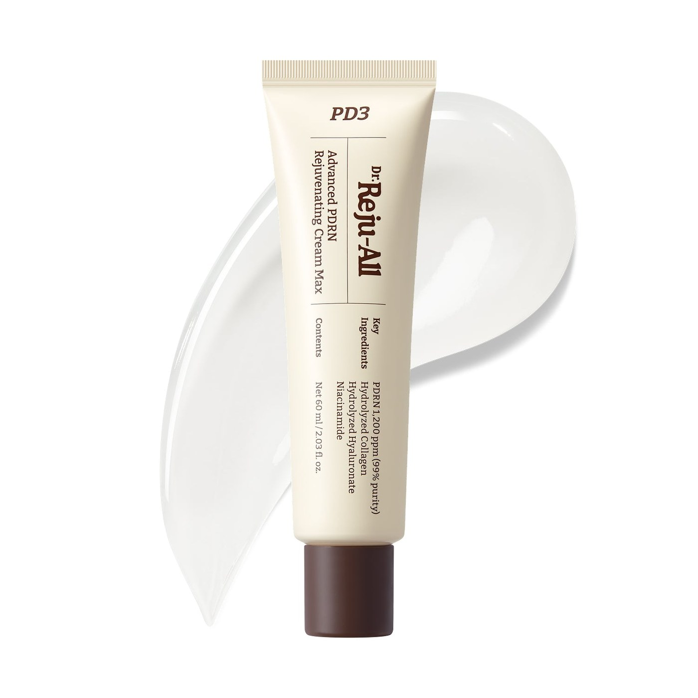

닥터 리쥬올 Advanced PDRN 크림
Dr.Reju-All Advanced PDRN Rejuvenating Cream — 여행 기념·선물용 스킨케어.
닥터 리쥬올(Dr.Reju-All) Advanced PDRN Rejuvenating Cream은 PDRN 성분을 내세운 리쥬브네이팅 크림입니다. 올리브영·드럭스토어·백화점 화장품 코너에서 찾는 여행객이 많습니다.
용량·성분표(영문)와 유통기한을 확인하고, 액체·크림류는 기내 수하물 제한(100ml)을 고려하세요.
닥터 리쥬올(Dr.Reju-All) Advanced PDRN Rejuvenating Cream은 PDRN 성분을 내세운 리쥬브네이팅 크림입니다. 올리브영·드럭스토어·백화점 화장품 코너에서 찾는 여행객이 많습니다.
용량·성분표(영문)와 유통기한을 확인하고, 액체·크림류는 기내 수하물 제한(100ml)을 고려하세요. 피부 타입이 다르니 테스터·샘플이 있으면 먼저 써 보세요.
사는 팁
구매 팁 공식·대형 매장에서 구매하고, 귀국 시 세관·액체 규정을 미리 확인하세요.